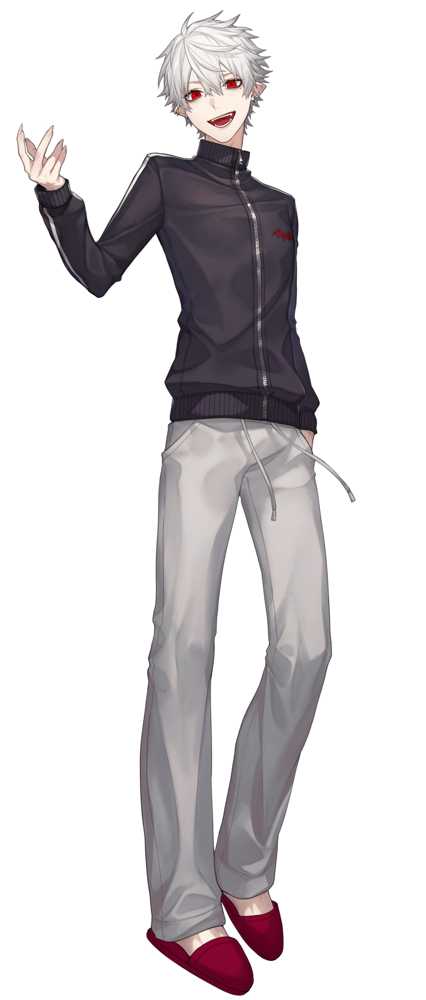

2018年に個人勢としてデビューした後、にじさんじに加入した。
配信ではゲーム実況が中心。
様々なゲームをプレイしているが、こと『Apex Legends』等のFPSでは高い実力を見せる。
配信中のトークはテンポの良さと独特の言語センスが噛み合い、度々名言やパワーワードが生まれる。
他にも数多くの「歌ってみた」動画やオリジナル楽曲・にじさんじ公式イベント等への参加、
同期の叶とのユニット「ChroNoiR」を始めとした様々なユニットでの活動、
コラボ配信やグッズ・ボイス展開を含め、幅広く精力的な活動を行っている。
2025年6月3日にはにじさんじおよび国内男性VTuber初のチャンネル登録者数200万人を突破するなど、その勢いは留まることを知らない。